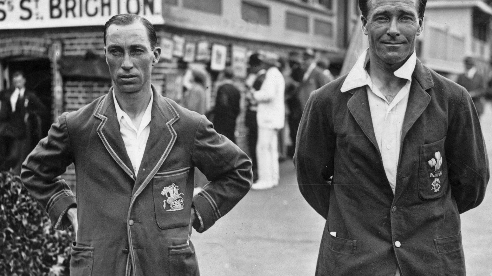

Could be considered as old as cavemen but the first confirmed drawn record of a hat is dated around 3200 BC in Egypt. From their birth to before modern material and fabrics, hats were customarily made from animal hide, fur, and even straw/grass like baskets with the same weaving patterns.
Hats
Originally created to protect your head from the environment.

Shoes
The first knwon pair of shoes were made of tree bark.

Earliest proven examples of footwear could be traced back to 7,000-8,000 BC, which were Sagebrush bark sandals found in the Fort Rock Cave in Oregon, USA. Although, the romans were the first to design left and right foot shoes. Shoes were originally designed feet from sharp objects, rough terrain, and other elements that could cause harm. Warmth during the harsh winters were also other purposes of shoes. Over human history, shoes changed with color, design, style, purposes such as sports, and even for overall health to what we see today.
Glasses/Sunglasses
The first glasses were made of wood, horn, and tortoiseshell.

Glasses however were in existence since 13th century China and used by judges as to not scrutinize their judgement through facial expressions. The dark quartz glasses they wore helped disguise their eyes as to not be read before final judgement was made. Modern sunglasses became possible once the manipulation of UV light was discovered. The Inuit people can be credited with the earliest version of sunglasses. In the late 19th century, they used whale bone with thin slits to see through which shielded their eyes from the bright reflection of light coming off the white snow around them.
underwear
The earliest underwear was loincloth that went between the legs and fastened around the waist.

The modern style underwear with a separate hole for each leg was first designed in the 1600s. Women were the first to sport such undergarments, but men eventually picked them up as well. Even though they were mainly invented to help people protect their genitals from the environment, with the development of modern society, they preserved modesty. Along with preventing abrasion from outer clothes and other rougher garments.
Bras/Corsets
Corcets are the predecessors of the modern bra and were originaly made of wood, metal or whalebone.

Multibillion dollar companies dedicate themselves to bras/corsets in our modern day but these pieces date back all the way back to women in Greece and Rome. Their bras were mere straps of cloth fastened snug around their chest and held in place using pins in the back. They were used mainly when doing sports or any other strenuous physical activity. Corsets gained massive popularity during medieval times and were made of whale bone to help keep the ridged shape allowing for the cone/hourglass shape under pressure that was desired. With time, both bras and corsets received vast modifications for greater comfort, appeal, and support for women of all bust shape/size.
Leggings
Leggings were originally two separate garments instead of the modern one piece.

Originally worn solely by men and vastly popular in medieval Scottland, were made of rough material such as leather or chainmail. With time, they turned to wool as material to keep warm and further protect from the environment. Now, they are a common piece of clothing that still suffice their original purpose of protection but have become modernized with form fitting, designed, and colors to meets demand needs/preferences.
Ties
Its origins come from military use to represent rank.

First popularized in 1636 Europe by King Louis XIV with his group of Croatian mercenaries who wore cravats around their necks for protection. With time these cravats would be highly distinguishable with color, patterns, and high-end materials signifying rank. While they paraded through Paris, fashionistas become dazzled by them for such colors and patterns that they adapted such pieces often having them made of high-end expensive materials to show off their wealth. This still holds true to this day with the vast options of ties.
Jeans
Invented for tough environments and longevity purposes.
Most common version known are blue jeans, although may seem to have been around forever, are only an estimated 150 years old. As many inventions in history, they were created to solve a common problem for people. A strong pair of pants were needed to withstand the tough environment by minors in the 1870s. Jacob Davis created such a piece of clothing made from duck cloth, a strong canvas material. Together, with Levi Strouss, they created the first blue jean made from denim in 1873. Thus, forever cementing blue jeans in clothing history which would later see them expand to different fashions and uses
Tunics
Extremely popular in ancient Rome and worn by both men and women.

Worn by ancient Greeks and Romans for the loose fitting and cool feel it gave in hot regions while providing comfort. This piece of clothing was adopted by them since its creation in 3rd century BCE.
blue jeans,cargos
Are known as vaqueros("cowboys") or tejanos("Texans") in Spain.

Cargo pants were born in 1938 in Britain and worn by military personal as part of their Battle dress Uniforms (BDUs). They gained large popularity outside of military use for their practical functionality in the late 20th century. Large pockets near the thigh offered easy access for tools and supplies making it ideal for outdoor use as well as manual labor work. Fashion trends also led to changes in cargo pants such as color, added print, and for all ages/sizes as well as gender. The blue jeans that we know today were originally created through the combined efforts of Jacob Davis and Levi Strauss in 1873 due to the demand of a tough long-lasting pair of pants.
Swimsuits
The modern bikini was invented by an auto engineer-turned fashion designer.

Swimsuits were not masse produced until the 19th century when railroads were available to the masses so that they can travel to beaches and large bodies of water. At this early age, swimsuits covered the entire body for both men and women. The early 20th century saw changes in swimsuits through their design being more form fitted and aerodynamic. Yet they had to still meet decency laws of the time in the 1930s.
Men's Blazer
Gained the name blazer from the original one being bright red(blazing color).
This piece of clothing emerged from the world of rowing when the Cambridge University Lady Margaret Boat Club sported red jackets. These red jackets became the first blazers which then gained popularity and fame especially with their versatile capabilities. That notable piece of the blazer inspired the adaptation to military use in the early 19th century.
T shirts
First marketed as being "bachelor undershirts".
– A simple and iconic name was created by a novelist, F. Scott Fitzgerald. He used this term in his novel “This Side of Paradise” to describe the T shape of the shirt. The creation of this shirt came from meeting consumers demand for a top to be used during warm weather. Normally people would take a full onesie, cut the top portion off, and tuck in the end of top into their bottoms. The U.S. Navy popularized this garment in 1913 making it standard issue as undershirts for all seamen.
Hawaiian Shirts
First made from breathable kimono fabric.

These shirts came to fruition from adapting with events during the 1920s and 1930s when they were invented. Originally showing Japanese patterns, the patterns turned into native flowers and other vegetation of the Hawaiian Islands. They became increasingly popular through the use by service members in the armed forces returning to the mainland while boasting these new colorful and eye-catching shirts.
Work out clothings (stretchy)
Made for sports/exercise and later created fashion like athleisure.
First invented in the 1870s by John Redfern for women in highly active activities such as tennis, archery, and yachting. They continued to be only seen when doing sports or exercising but later garnered popularity outside of these activities. The 1950s created a demand for clothing that was functional, fashionable, and had an emphasis in comfort with ease of movement. Thus creating fashion trends were people sported activewear in their everyday activities.